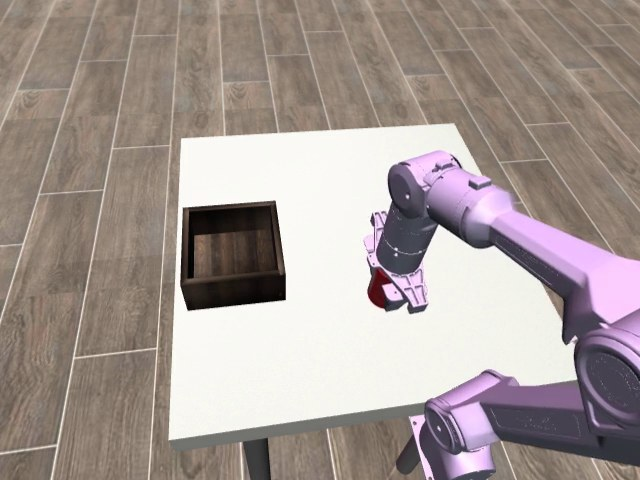

A field guide to robot manipulation
Who decides the arm’s next move?
A can and an empty bin sit on the table. A robot might put the can away by following a pose from a language model, by executing a grasp tool, or by handing the last few centimetres to a policy trained for contact. The videos can look remarkably similar. To tell the systems apart, follow three things: what the model sends, what feedback reaches the gripper and the model, and what changes before the next attempt.
Start with actions
Where to start
For robot control, start with the first three chapters. For training, begin with the teacher, student and recovery branches in chapter four. If you already know the control stack, start with the recent research and evaluation audits in chapter five.
A map of the interfaces
A robot-use agent (RUA) selects actions from observations, executes them through a robot interface and uses the returns to continue. A vision-language-action (VLA) policy models observations, instructions and actions together. The two can coexist: an agent can call a VLA or emit poses directly. The table groups systems by what the model passes to the next layer.
| Model output | Who realizes the motion? | Next feedback |
|---|---|---|
| EEF pose or delta | IK and local controller | New image and measured pose |
| Tool call or program | Perception, planning and control APIs | Returns and execution evidence |
| Subgoal or policy invocation | Analytic primitives and a frozen VLA | Observation at return or chunk commit |